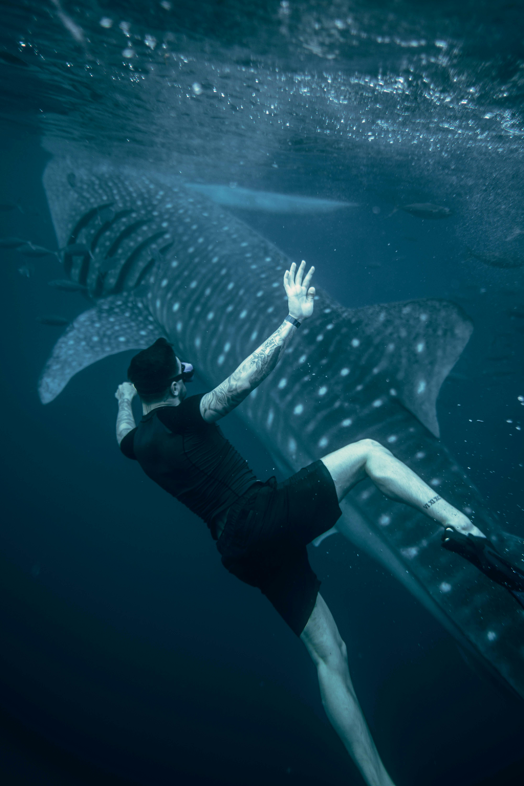

Descripción Del Curso
El Curso de Introducción a la Apnea, tiene como finalidad promover y masificar la enseñanza del buceo libre en un nivel de iniciación, mediante una capacitación dirigida a personas que deseen disfrutar de la inmensidad del mar de manera libre y usando su propia capacidad pulmonar. Este curso ofrece a los participantes las herramientas y conocimientos necesarios para iniciarse o mejorar su nivel de formación para la práctica de este deporte.
